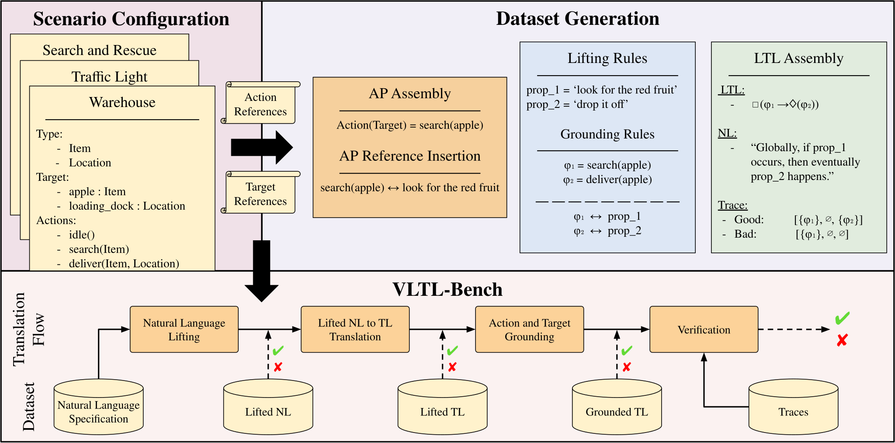
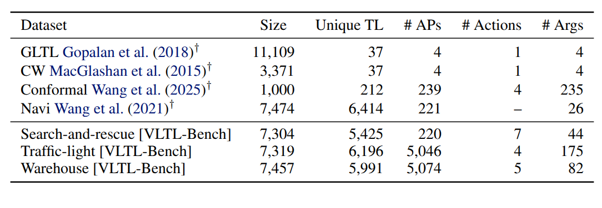

Verifiable Natural Language to Linear Temporal Logic Translation: A Benchmark Dataset and Evaluation Suite
Abstract
Current benchmarks for natural language (NL) to temporal logic (TL) translation report near-perfect accuracy on logic translation alone but neglect grounding atomic propositions to new environments—a step essential for actual verification. We introduce VLTL-Bench, a comprehensive benchmark measuring both the verification and verifiability of automated translation systems.
VLTL-Bench provides a dataset consisting of four unique state spaces and thousands of diverse natural language specifications with corresponding formal temporal logic expressions. Crucially, the benchmark includes intermediate evaluation points with ground truths for lifting, grounding, translation, and verification substeps, as well as sample traces for validating temporal logic expressions.
Our empirical evaluation reveals that state-of-the-art frameworks that achieve near-perfect lifted translation accuracy suffer dramatic performance drops when grounding is required, exposing a critical gap between reported benchmark results and real-world deployment capabilities. These findings demonstrate that comprehensive evaluation requires domain-general systems capable of handling extensible grounding scenarios, not just translating logical structure.
Key Contributions
Unified Benchmark
First benchmark supporting evaluation of all NL-to-TL pipeline components with ground truth annotations at every stage: lifting, grounding, translation, and verification.
Verification Evaluation
Novel verification evaluation methodology using satisfying and violating execution traces, enabling assessment of whether translated formulas are actually usable for runtime verification.
Exposing Failure Modes
Empirical study revealing critical failure modes in current methods—particularly in grounding tasks—where reported near-perfect accuracy drops dramatically in end-to-end evaluation.
Evaluation Pipeline
VLTL-Bench evaluates four complementary stages of the NL-to-LTL translation pipeline.
| Dataset | Lifting | Translation | Grounding | Verification |
|---|---|---|---|---|
| Cleanup World | ||||
| GLTL | ||||
| Navi | ||||
| Conformal | ||||
| VLTL-Bench (Ours) |
Dataset Overview

Data synthesis pipeline: expert-crafted templates are instantiated with scenario-specific atomic propositions to generate diverse NL-LTL pairs with full annotation.
Kitchen Assistant
Ambiguous action/argument references
Traffic Light
Large argument library, few actions
Search & Rescue
Multi-step temporal dependencies
Warehouse
High semantic variability (80 COCO objects)
Benchmark Results

Comprehensive results across all evaluation stages. Systems achieving near-perfect lifted translation accuracy exhibit dramatic performance drops on grounded end-to-end evaluation.
Key Findings
| Finding | Details |
|---|---|
| Lifted translation is “solved” | NL2TL achieves 99.9–100% accuracy on lifted translation when given ground-truth atomic propositions, masking critical downstream failures. |
| Grounding is the bottleneck | Few-shot grounding accuracy ranges from only 56.9–82.3% per atomic proposition, even with scenario-informed prompting. This is the primary failure mode. |
| End-to-end collapse | NL2TL drops to 54.4–60.1% and Lang2LTL to 37.9–72.1% on end-to-end grounded translation, far below real-world requirements. |
| Verification gap | Systems that perform well on lifted translation see 20–30 percentage point declines in verification accuracy when using grounded formulas. |
BibTeX
@article{english2025vltlbench,
title={Verifiable Natural Language to Linear Temporal Logic Translation: A Benchmark Dataset and Evaluation Suite},
author={English, William and Walker, Chase and Simon, Dominic and Jha, Sumit and Ewetz, Rickard},
journal={arXiv preprint arXiv:2507.00877},
year={2025}
}